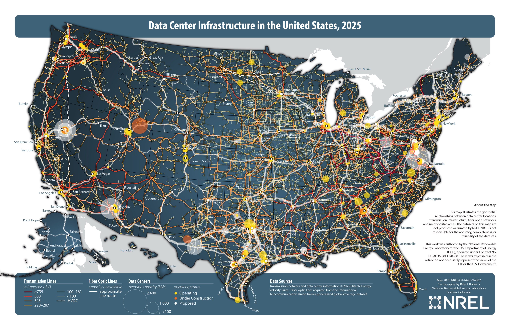

The Internet
The Internet is a global network that connects computers all around the world. It consists of:
- Physical infrastructure: Cables under the ground and ocean, routers that direct traffic, and other hardware that connects everything together
- Communication protocols: Standardized rules and methods that allow computers to exchange information with each other
The World Wide Web (WWW) is what most people think of when they hear "the Internet" - but it's actually just the "public face" of the Internet. The WWW is all the websites and web applications that we can access through our web browsers.
Some things on the WWW:
- Websites (like Facebook, YouTube, or Wikipedia)
- Web applications (like Google Docs or Gmail's web interface)
- Web services that apps use to work (like weather data services)
Some things that use the Internet but are NOT part of the WWW:
- FTP (File Transfer Protocol, a way to transfer files between computers)
- SSH (Secure Shell, a secure way to connect to other computers)
- DNS (Domain Name System, the system that converts website names to addresses)
The WWW is one part of the larger Internet ecosystem.
URLs
URL = Uniform Resource Locator
We will use the URL diagram below as a reference point for the rest of this section.

Domain Name System (DNS)
DNS converts domain names into IP addresses:
google.com → 172.217.14.206
DNS exists because:
- Computers communicate using IP addresses
- Domain names are easier for people to remember and type
- Anyone can purchase a domain name for an annual fee.
When you first access a website your computer must check a DNS server to get the IP address associated with that address.
Where are DNS Servers?
We can see where some of the major DNS namespace servers are using sites like:
The ping command is used to check the connection to a
server. It sends a series of packets to the server and measures the
time it takes for them to return.
To stop pinging, press Ctrl+C.
Try pinging Google's IP address and paste it into your browser's address bar.
## BASH / PowerShell
ping google.comIP Addresses
IP (Internet Protocol) handles addressing and routing of data:
- Gives every device on the Internet a unique address (IP address)
- Routes packets from sender to receiver across the network
Every device on the Internet needs an IP address:
- Your home network has a public IP address visible to the Internet
- Devices inside your network (phones, laptops) have private IP addresses
There are only about 4 billion IPv4 addresses - fewer than the number of internet-connected devices in the world today. That scarcity is why a home network shares one public address across many private ones instead of giving every device its own.
Try checking your computer's IP addresses using the commands below:
## BASH
ifconfig
## PowerShell
ipconfig
You'll see both IPv4 (like 192.168.1.1) and newer
IPv6 (like fe80::215:5dff:fe15:fcaf) addresses.
When you make a request to a website, your IP request is included in the request packet. This lets the server know where to send the response.
Client-Server Model
A client server model is a way of organizing software so that one program (the client) requests services from another program (the server).

Client = Browser or a program that requests data from a server (e.g. an "app" on your phone)
Server = A program that provides data to a client.

The term "server" is used in two main ways:
-
As software: A web server is a program that listens for incoming requests and handles them - just like any other program on a computer.
-
As hardware: A "server" can be the actual physical computer that runs server software. While there are specialized computers built specifically to be servers (like the ones in data centers), technically any computer can act as a server - even your laptop could be one!
TCP
Imagine you sent a message to a friend using letters through regular post office mail, but you sent it one word at a time. You'd need a way to determine things like:
- How many words are in the overall message?
- Did any letters get lost in the mail?
- Was the message corrupted or tampered with in transit?
TCP (Transmission Control Protocol) ensures data transmission between devices is reliable, and helps address these concerns:
- Breaks large messages into smaller packets
- Makes sure all packets arrive correctly
- Puts the packets together in the right order
- Requests retransmission of any lost packets
This is called packet switching - each packet can take a different route to its destination, which is part of what makes the Internet decentralized. TCP and IP are just two protocols in a much larger stack; we'll cover the full protocol suite and how its layers fit together in the networking module.
The Physical Path
All of this - addresses, packets, protocols - still has to travel across physical infrastructure:
- ISPs (Internet Service Providers) connect homes and businesses to the wider Internet
- Routers sit at the intersections, reading each packet's address and forwarding it toward its destination
- Backbone cables - including massive fiber-optic lines running under the ocean - carry traffic between continents

No single company or government owns this infrastructure, which is part of why the Internet has no central off switch.
HTTP and HTTPS
HTTP (Hypertext Transfer Protocol) and HTTPS (HTTP Secure) are the main protocols used for communication on the World Wide Web. They define how messages are formatted and transmitted between clients and servers.
When you visit a website:
- Your browser (the client) sends a web request to get information
- The web server processes this request
- The server sends back a web response with the requested information
The only difference between HTTP and HTTPS is that HTTPS encrypts the data being sent, making it secure from tampering or snooping.
Want to see HTTP in action? Try this:
- Press F12 to open your browser's developer tools
- Click the "Network" tab
- Refresh this page
You'll see all the requests and responses between your browser and our web server. Each entry shows:
- The requested resource (HTML, images, CSS, etc.)
- Response status
- Size of the data
- Time taken
Click any entry to see detailed information about that request and response.
Putting it All Together: A Round Trip
When you visit a website, here's what happens:
- Your browser sends a request to a web server
- The request is broken into packets and sent across the Internet
- The web server receives the packets and prepares a response
- The response is broken into packets and sent back across the Internet
- Your browser receives and reassembles the packets, then displays the page
The Internet is decentralized - packets can take different routes to their destination. If some network connections fail, packets will be automatically routed through working connections instead.